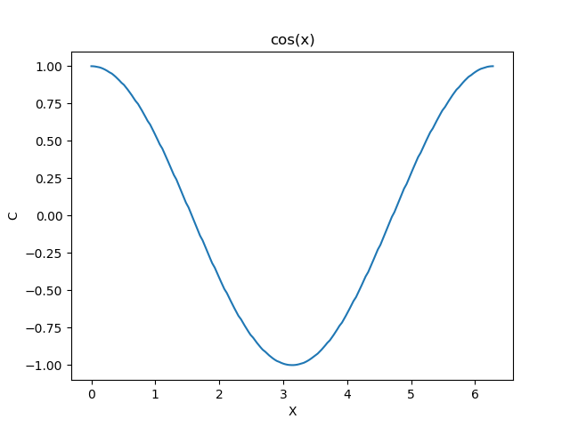
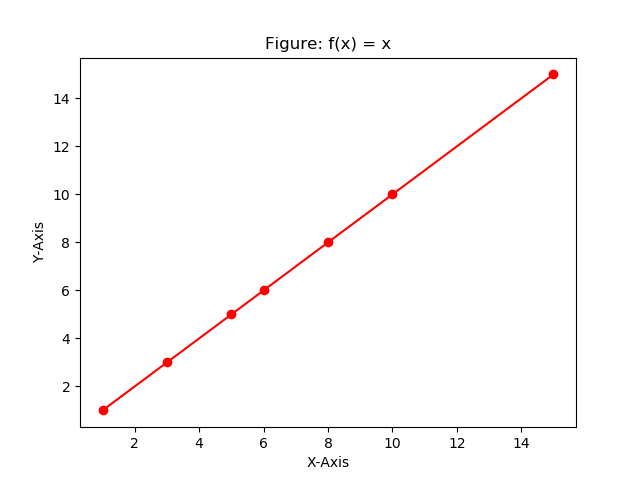
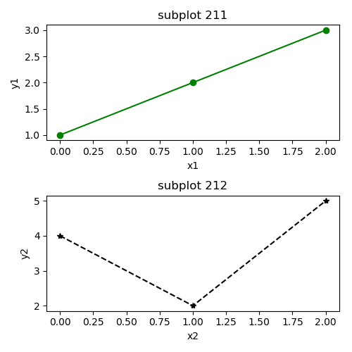
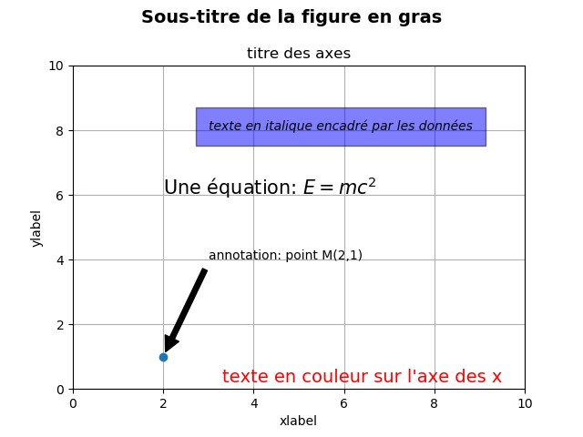
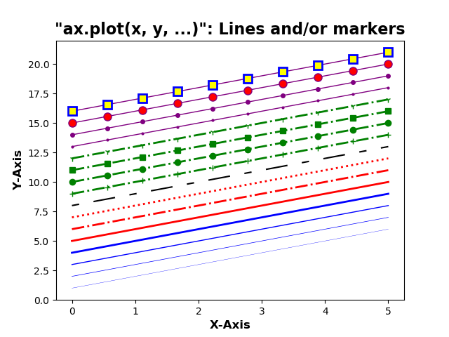
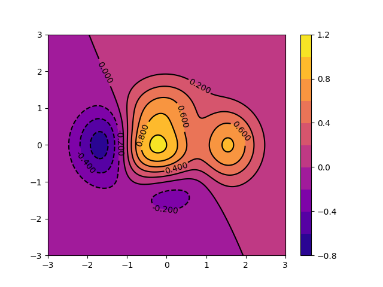
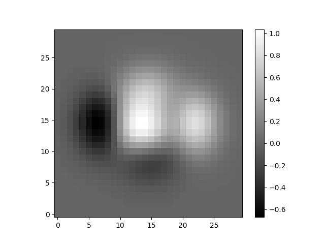
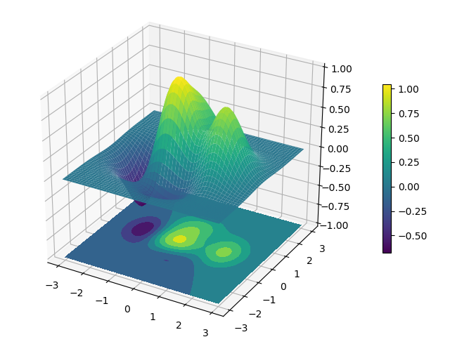

Bibliothèque numérique: numpy
Tableaux et matrices
Lecture et écriture de données
Bibliothèque Python de visualisation des données: matplotlib
Documentation en ligne et Galerie
Guide de Démarrage
Vues en grille
Commandes de texte de base
Styles de lignes et de marqueurs
Colormap: Tracés contour, Imshow et 3D
numpy
La bibliothèque numpy (http://www.numpy.org) est utilisée dans presque tous les calculs numériques réalisés à l'aide de Python. C'est une bibliothèque qui fournit des structures de données de haute performance de type vectoriel, matriciel et de dimensions supérieures. Il est implémenté avec les syntaxes de C et Fortran, ainsi lorsque les calculs sont vectorisés les performances sont très bonnes.
Pour utiliser numpy, vous devez importer le module:
import numpy as np
Dans la bibliothèque numpy, la terminologie utilisée pour les vecteurs, les matrices et tout ensemble de données à grande dimension est array.
Il existe plusieurs façons d'initialiser de nouveaux tableaux numpy, par exemple à partir de:
arange, linspace, etc.
Par exemple, pour créer de nouveaux tableaux vectoriels et matriciels à partir de listes Python, nous pouvons utiliser la fonction numpy.array.
In [8]: v = np.array([1,2,3,4]) # Un vecteur: l'argument de la fonction array() est une liste Python
...: v
Out[8]: array([1, 2, 3, 4])
In [9]: M = np.array([[1, 2], [3, 4]]) # Une matrice: l'argument de la fonction de tableau est une liste imbriquée de Python
...: M
Out[9]:
array([[1, 2],
[3, 4]])
Les variables v et M sont de type ndarray que fournit le module numpy.
In [10]: type(v), type(M)
Out[10]: (numpy.ndarray, numpy.ndarray)
La différence entre les tableaux v et M n'est que dans leur forme. Nous pouvons obtenir des informations sur la forme d'un tableau en utilisant la propriété ndarray.shape.
In [11]: v.shape
Out[11]: (4,)
In [13]: M.shape
Out[13]: (2, 2)
Le nombre d'éléments dans le tableau est disponible via la propriété ndarray.size:
In [14]: M.size
Out[14]: 4
De manière équivalente, nous pourrions utiliser la fonction numpy.shape et numpy.size
In [15]: np.shape(M)
Out[15]: (2, 2)
et
In [16]: np.size(M)
Out[16]: 4
Jusqu'à présent, le numpy.ndarray ressemble beaucoup à une liste Python (ou à une liste imbriquée).
Pourquoi ne pas utiliser simplement les listes Python pour les calculs au lieu de créer un nouveau type de tableau?
Il existe plusieurs raisons pour ne pas utiliser que les listes:
numpy peut être implémentée dans une langue compilée (C et Fortran sont utilisés).
En utilisant la propriété dtype (type de données) d'un ndarray, on peut connaître le type des éléments d'un tableau ou d'une matrice:
In [17]: M.dtype
Out[17]: dtype('int64')
Si nous le désirons, nous pouvons définir explicitement le type de données du tableau lorsque nous le créons, ceci en utilisant le mot-clé dtype comme argument:
In [18]: M_Complex = np.array([[3, 1+2j], [1+2j, 4]], dtype=complex)
...: M_Complex
Out[18]: array([[3.+0.j, 1.+2.j],
[1.+2.j, 4.+0.j]])
Les types usuels qui peuvent être utilisés avec dtype sont: int, float, complex, bool, object, etc. Nous pouvons également définir explicitement la taille des bits des éléments, par exemple: int64, int16, float128, complex128.
Pour les tableaux de grandes tailles, il est inconcevable d'initialiser les données manuellement. Au lieu de cela, nous pouvons utiliser l'une des nombreuses fonctions dans numpy qui génère des tableaux ou des matrices de différentes formes et tailles. Certains parmi les plus utilisés sont:
arange()linspace() et logspace()mgrid()diag()zeros() et ones()arange() :
Création d'un tableau à l'aide de la fonction arange()
In [19]: x = np.arange(0, 10, 1) # Arguments: start, stop, step
...: x
Out[19]: array([0, 1, 2, 3, 4, 5, 6, 7, 8, 9])
In [23]: x = np.arange(-2, 2, 0.1)
...: x
Out[23]:
array([-2.00000000e+00, -1.90000000e+00, -1.80000000e+00, -1.70000000e+00,
-1.60000000e+00, -1.50000000e+00, -1.40000000e+00, -1.30000000e+00,
-1.20000000e+00, -1.10000000e+00, -1.00000000e+00, -9.00000000e-01,
-8.00000000e-01, -7.00000000e-01, -6.00000000e-01, -5.00000000e-01,
-4.00000000e-01, -3.00000000e-01, -2.00000000e-01, -1.00000000e-01,
1.77635684e-15, 1.00000000e-01, 2.00000000e-01, 3.00000000e-01,
4.00000000e-01, 5.00000000e-01, 6.00000000e-01, 7.00000000e-01,
8.00000000e-01, 9.00000000e-01, 1.00000000e+00, 1.10000000e+00,
1.20000000e+00, 1.30000000e+00, 1.40000000e+00, 1.50000000e+00,
1.60000000e+00, 1.70000000e+00, 1.80000000e+00, 1.90000000e+00])
Fonctions linspace() et logspace():
En utilisant linspace(), les deux points finaux sont inclus
In [24]: np.linspace(0, 10, 20) # linspace(star, stop, Nombre de points)
Out[24]:
array([ 0. , 0.52631579, 1.05263158, 1.57894737, 2.10526316,
2.63157895, 3.15789474, 3.68421053, 4.21052632, 4.73684211,
5.26315789, 5.78947368, 6.31578947, 6.84210526, 7.36842105,
7.89473684, 8.42105263, 8.94736842, 9.47368421, 10. ])
In [25]: np.logspace(0, 10, 10, base=e)
Out[25]:
array([1.00000000e+00, 3.03773178e+00, 9.22781435e+00, 2.80316249e+01,
8.51525577e+01, 2.58670631e+02, 7.85771994e+02, 2.38696456e+03,
7.25095809e+03, 2.20264658e+04])
Fonctions mgrid() et meshgrid():
In [26]: x, y = np.mgrid[0:5, 0:5] # Similaire à meshgrid dans MATLAB
...: x
Out[26]:
array([[0, 0, 0, 0, 0],
[1, 1, 1, 1, 1],
[2, 2, 2, 2, 2],
[3, 3, 3, 3, 3],
[4, 4, 4, 4, 4]])
In [27]: y
Out[27]:
array([[0, 1, 2, 3, 4],
[0, 1, 2, 3, 4],
[0, 1, 2, 3, 4],
[0, 1, 2, 3, 4],
[0, 1, 2, 3, 4]])
In [31]: x, y = np.meshgrid(np.linspace(0,2,6),np.linspace(0,2,6))
...: x
Out[31]:
array([[0. , 0.4, 0.8, 1.2, 1.6, 2. ],
[0. , 0.4, 0.8, 1.2, 1.6, 2. ],
[0. , 0.4, 0.8, 1.2, 1.6, 2. ],
[0. , 0.4, 0.8, 1.2, 1.6, 2. ],
[0. , 0.4, 0.8, 1.2, 1.6, 2. ],
[0. , 0.4, 0.8, 1.2, 1.6, 2. ]])
In [32]: y
Out[32]:
array([[0. , 0. , 0. , 0. , 0. , 0. ],
[0.4, 0.4, 0.4, 0.4, 0.4, 0.4],
[0.8, 0.8, 0.8, 0.8, 0.8, 0.8],
[1.2, 1.2, 1.2, 1.2, 1.2, 1.2],
[1.6, 1.6, 1.6, 1.6, 1.6, 1.6],
[2. , 2. , 2. , 2. , 2. , 2. ]])
Fonction diag():
Une matrice diagonale
In [40]: np.diag([1,2,3])
Out[40]:
array([[1, 0, 0],
[0, 2, 0],
[0, 0, 3]])
Diagonale avec décalage de la diagonale principale
In [41]: np.diag([1,2,3], k=3)
Out[41]:
array([[0, 0, 0, 1, 0, 0],
[0, 0, 0, 0, 2, 0],
[0, 0, 0, 0, 0, 3],
[0, 0, 0, 0, 0, 0],
[0, 0, 0, 0, 0, 0],
[0, 0, 0, 0, 0, 0]])
Fonctions zeros() et ones():
In [42]: np.zeros((3,3))
Out[42]:
array([[0., 0., 0.],
[0., 0., 0.],
[0., 0., 0.]])
In [43]: np.ones((3,3))
Out[43]:
array([[1., 1., 1.],
[1., 1., 1.],
[1., 1., 1.]])
Le module numpy contient une fonction très pratique, savetxt, permettant d’enregistrer des données tabulaires. Les données doivent être stockées dans un tableau numpy à deux dimensions. La fonction savetxt permet de contrôler le format des nombres dans chaque colonne (fmt), un en-tête peut être ajouté (header) et les lignes d'en-tête commencent par un caractère de commentaire (comment).
Pour stoker les valeurs de \( cos(x) \) avec \( x \in [0, 2 \pi] \) dans un fichier cosinus.dat, le code est comme ci-dessous:
'''Créer un tableau à deux dimensions de
[x, cos (x)] dans chaque ligne'''
import numpy as np
x = np.linspace(0, 2*np.pi, 200) # 200 valeurs de x
# un tableau 2 colonnes 200 lignes
data = np.array([x, np.cos(x)]).transpose()
# Écrire un tableau de données dans un fichier sous forme de tableau
np.savetxt('cosinus.dat', data, fmt=['%.2f', '%.4f'],
header='x cos(x)', comments='#')
Le fichier cosinus.dat est créé dans le répertoire de travail:
# x cos(x)
0.00 1.0000
0.03 0.9995
0.06 0.9980
0.09 0.9955
0.13 0.9920
0.16 0.9876
0.19 0.9821
0.22 0.9757
0.25 0.9683
... ......
... ......
Les données du fichier cosinus.dat peuvent être lues dans un tableau numpy par la fonction loadtxt (vous pouvez utiliser la commande help(loadtxt) dans le notebook pour comprendre l'utilité des arguments entre les parenthèse):
In [51]: data = np.loadtxt('cosinus.dat', comments='#')
...: data
Out[51]:
array([[ 0. , 1. ],
[ 0.03 , 0.9995],
[ 0.06 , 0.998 ],
[ 0.09 , 0.9955],
[ 0.13 , 0.992 ],
[ 0.16 , 0.9876],
[ 0.19 , 0.9821],
[ 0.22 , 0.9757],
[ 0.25 , 0.9683],
[ 0.28 , 0.9599],
..................
..................
..................
[ 6.22 , 0.998 ],
[ 6.25 , 0.9995],
[ 6.28 , 1. ]])
Les lignes commençant par le caractère de commentaire sont ignorées lors de la lecture. L'objet data résultant est un tableau à deux dimensions: data[i, j] contient le numéro de ligne i et le numéro de colonne j dans la table, c'est-à-dire que data[i, 0] contiennent la valeur x et que data[i, 1] la valeur cos(x) dans la i-ème ligne.
Nous pouvons utiliser le fichier cosinus.dat pour tracer la fonction \( cos(x) \) comme indiqué dans le code suivant:
import numpy as np
import matplotlib.pyplot as plt
# Charger les données du fichier 'cosinus.dat'
X, C = np.loadtxt('cosinus.dat', comments='#', unpack=True)
# Tracer C en fonction de X
plt.plot(X,C)
plt.title("cos(x)")
plt.xlabel("X")
plt.ylabel("C")
plt.show()
La sortie de ce code est la Figure 1.
Figure 1: Sortie du code.

matplotlib matplotlib (http://matplotlib.org/) est une excellente bibliothèque graphique 2D et 3D pour générer des graphiques scientifiques. Voici quelques-uns des nombreux avantages de cette bibliothèque:
mtplotlib.
De nombreux utilisateurs de matplotlib sont souvent confrontés à la question:
Je veux tracer les courbes de deux fonctions (\( f \) te \( g \)) ressemblant à une troisième (\( h \))?Je souhaite bonne chance à ceux qui désirent obtenir rapidement une réponse, même avec l'aide de google!. C'est pourquoi la galerie de matplotlib (http://matplotlib.org/gallery.html) est si utile, car elle montre la variété des possibilités. Ainsi, vous pouvez parcourir la galerie, cliquer sur n'importe quel graphique qui comporte les éléments que vous voulez reproduire et afficher le code qui a servi à le générer. Vous deviendrez rapidement autonome, vous allez mélanger et assortir différents composants pour produire votre propre chef-d’œuvre!
# Nom Fichier: BasicPlot1.py
# importaion
import matplotlib.pyplot as plt
# definir x
x = [1, 3, 5, 6, 8, 10, 15]
# definir y
y=x
# créer un nouveau graphique
plt.figure()
# Écrire un titre
plt.title("Figure: f(x) = x")
#plot f(x)= x avec: ligne solide ( - ) et marqueurs ( o ) rouges ( r )
plt.plot(x, y, '-ro')
# Écrire un texte (label) sur l'axe des x
plt.xlabel("X-Axis")
# Écrire un texte (label) sur l'axe des y
plt.ylabel("Y-Axis")
#les graphiques ne seront affichés que lorsque vous appelez plt.show ()
plt.show()
Figure 2: Fenêtre de traçage de matplotlib.

Le graphique (Figure) est le conteneur de niveau supérieur dans cette hiérarchie. C'est la fenêtre/page globale sur laquelle tout est dessiné.
Vous pouvez avoir plusieurs figures indépendantes et les graphiques peuvent contenir plusieurs Axes.
La plupart des tracés ont lieu sur des Axes. C’est effectivement la zone sur laquelle nous traçons les données et les graduations/labels/etc. qui leur sont associés. Habituellement, nous configurons un Axes avec un appel à Subplot (qui place les Axes sur une grille régulière). Par conséquent, dans la plupart des cas, Axes et Subplot sont synonymes (figure). Chaque Axes ou Subplot a un axe X et un axe Y. Ceux-ci contiennent les graduations, les emplacements de graduations, etc.
plt.subplot(...) pour créer un graphique et y ajouter les axes automatiquement.
# Nom Fichier: subplots.py
# Importation
import matplotlib.pyplot as plt
fig1=plt.figure(figsize=(5, 5)) # Figure
ax1=plt.subplot(211) # premier subplot dans la figure
ax1.plot([1, 2, 3], "-go")
ax1.set_xlabel("x1")
ax1.set_ylabel("y1")
ax1.set_title('subplot 211') # titre du subplot 211
ax2=plt.subplot(212) # deuxième subplot dans la figure
ax2.plot([4, 2, 5], "--k*")
ax2.set_xlabel("x2")
ax2.set_ylabel("y2")
ax2.set_title('subplot 212') # titre du subplot 212
plt.tight_layout() # Ajuster la figure
plt.show()
Figure 3: Vue en grille, figure(1).

pyplot:
text() - ajoute du texte à un emplacement quelconque sur les axes; matplotlib.axes.Axes.text().xlabel() - ajoute une étiquette à l'axe des x; matplotlib.axes.Axes.set_xlabel()ylabel() - ajoute une étiquette à l'axe des y; matplotlib.axes.Axes.set_ylabel()title() - ajoute un titre aux Axes; matplotlib.axes.Axes.set_title()figtext() - ajoute du texte à un emplacement quelconque sur la figure; matplotlib.figure.Figure.text()suptitle() - ajoute un titre à la figure; matplotlib.figure.Figure.suptitle()annotate() - ajoute une annotation, avec une flèche optionnelle, aux axes; matplotlib.axes.Axes.annotate()matplotlib.text.Text(), qui peut être configurée avec diverses polices et autres propriétés. L'exemple ci-dessous montre toutes ces commandes en action.
# Nom Fichier: BasicText.py
# Importation
import matplotlib.pyplot as plt
fig = plt.figure()
fig.suptitle('Sous-titre de la figure en gras', fontsize=14, fontweight='bold')
ax = fig.add_subplot(111)
fig.subplots_adjust(top=0.85)
ax.set_title('titre des axes')
ax.set_xlabel('xlabel')
ax.set_ylabel('ylabel')
ax.text(3, 8, 'texte en italique encadré par les données', style='italic',
bbox={'facecolor':'blue', 'alpha':0.5, 'pad':10})
ax.text(2, 6, r'Une équation: $E=mc^2$', fontsize=15)
ax.text(0.95, 0.01, "texte en couleur sur l'axe des x",
verticalalignment='bottom', horizontalalignment='right',
transform=ax.transAxes,
color='red', fontsize=14)
ax.plot([2], [1], 'o')
ax.annotate('annotation: point M(2,1)', xy=(2, 1), xytext=(3, 4),
arrowprops=dict(facecolor='black', shrink=0.05))
ax.axis([0, 10, 0, 10])
plt.grid()
plt.show()
Figure 4: Texte de base.

linewidth ou lw, et le style de ligne peut être sélectionné à l'aide des arguments de mot-clé linestyle ou ls:
# Nom Fichier: LineandMarkerStyles.py
# Importation
import matplotlib.pyplot as plt
import numpy as np
x = np.linspace(0, 5, 10)
fig, ax = plt.subplots()
ax.plot(x, x+1, color="blue", linewidth=0.25)
ax.plot(x, x+2, color="blue", linewidth=0.50)
ax.plot(x, x+3, color="blue", linewidth=1.00)
ax.plot(x, x+4, color="blue", linewidth=2.00)
# possible linestype options '-', '-.', ':', 'steps'
ax.plot(x, x+5, color="red", lw=2, linestyle='-')
ax.plot(x, x+6, color="red", lw=2, ls='-.')
ax.plot(x, x+7, color="red", lw=2, ls=':')
# custom dash
line, = ax.plot(x, x+8, color="black", lw=1.50)
line.set_dashes([5, 10, 15, 10]) # format: line length, space length, ...
# possible marker symbols: marker = '+', 'o', '*', 's', ',', '.', '1', '2', '3', '4', ...
ax.plot(x, x+ 9, color="green", lw=2, ls='-.', marker='+')
ax.plot(x, x+10, color="green", lw=2, ls='-.', marker='o')
ax.plot(x, x+11, color="green", lw=2, ls='-.', marker='s')
ax.plot(x, x+12, color="green", lw=2, ls='-.', marker='1')
# marker size and color
ax.plot(x, x+13, color="purple", lw=1, ls='-', marker='o', markersize=2)
ax.plot(x, x+14, color="purple", lw=1, ls='-', marker='o', markersize=4)
ax.plot(x, x+15, color="purple", lw=1, ls='-', marker='o', markersize=8, markerfacecolor="red")
ax.plot(x, x+16, color="purple", lw=1, ls='-', marker='s', markersize=8,
markerfacecolor="yellow", markeredgewidth=2, markeredgecolor="blue")
# make a title for the subplot
ax.set_title('"ax.plot(x, y, ...)": Lines and/or markers', fontsize=16, weight='bold')
# make x and y axis label and set their font size and weight
ax.set_xlabel("X-Axis", fontsize=12, weight='bold')
ax.set_ylabel("Y-Axis", fontsize=12, weight='bold')
plt.show()
Figure 5: Styles de lignes et de marqueurs.

Voir la documentation de matplotlib colormaps http://matplotlib.org/users/colormaps.html.
# Nom Fichier: ContourPlot.py
# Importation
import numpy as np
import matplotlib.pyplot as plt
def f(x,y):
return (1 - x / 2 + x**5 + y**3) * np.exp(-x**2 -y**2)
n = 256
x = np.linspace(-3, 3, n)
y = np.linspace(-3, 3, n)
X,Y = np.meshgrid(x, y)
# Surface
S = plt.contourf(X, Y, f(X, Y), 8, cmap='plasma')
# Contour
C = plt.contour(X, Y, f(X, Y), 8, colors='black')
plt.clabel(C, inline=1, fontsize=10)
plt.colorbar(S) # afficher la barre de couleurs
plt.show()
Figure 6: Exemple de tracé de contour.

# Nom Fichier: Imshow.py
# Importation
import numpy as np
import matplotlib.pyplot as plt
def f(x, y):
return (1 - x / 2 + x ** 5 + y ** 3 ) * np.exp(-x ** 2 - y ** 2)
n = 30
x = np.linspace(-3, 3, n)
y = np.linspace(-3, 3, n)
X, Y = np.meshgrid(x, y)
Z = f(X, Y)
# Image
im = plt.imshow(Z, interpolation='nearest', cmap='gray', origin='lower')
plt.colorbar(im)
plt.show()
Figure 7: Exemple d'image pixelisée.

# Nom Fichier: Plot3D.py
# Importation
import numpy as np
import matplotlib.pyplot as plt
from mpl_toolkits.mplot3d import Axes3D
def f(x, y):
return (1 - x / 2 + x ** 5 + y ** 3 ) * np.exp(-x ** 2 - y ** 2)
n = 100
x = np.linspace(-3, 3, n)
y = np.linspace(-3, 3, n)
X, Y = np.meshgrid(x, y)
Z = f(X,Y)
fig = plt.figure()
ax = Axes3D(fig)
S = ax.plot_surface(X, Y, Z, cmap="viridis")
ax.contourf(X, Y, Z, zdir='z', offset=-1, cmap="viridis")
ax.set_zlim(-1, 1)
plt.colorbar(S, shrink=0.5)
plt.show()
Figure 8: Exemple de tracé en 3D.
